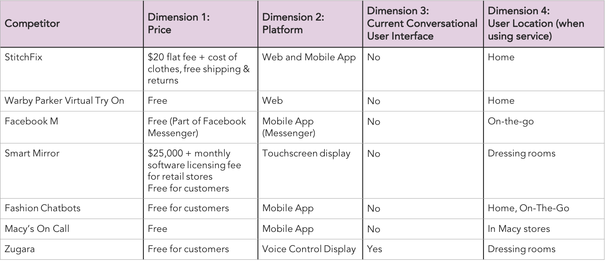
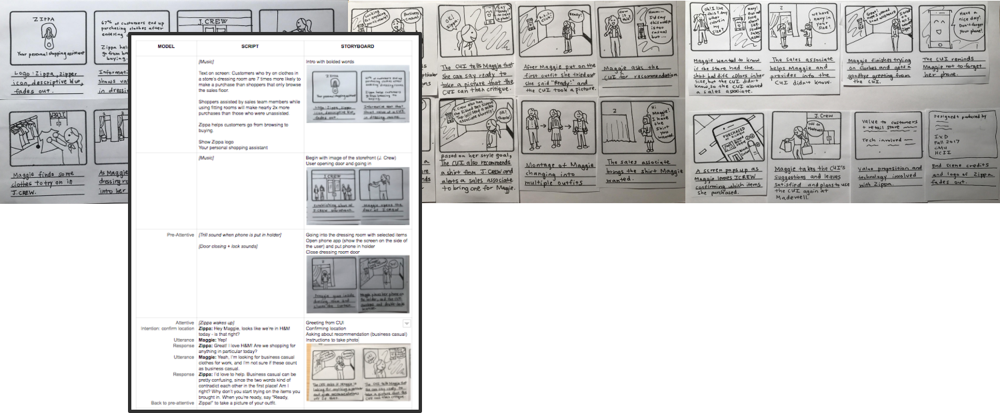

Skills: UX Design (Sketch, Usage Scenarios, Experience Prototyping), iMovie, UX Research
05-651: Interaction Design Studio I
October 2017 - November 2017
After looking into the retail store domain, we found that dressing rooms and personalized customer engagement with sales associates are critical to the success of retail businesses. Thus, we explored various usage scenarios and conducted experience prototyping to come up with Zippa, a conversational user interface (CUI). Zippa is a personal shopping assistant who provides customized recommendations to customers based on their specific goals or needs.
Conversational user interfaces (CUI) has become increasingly popular, especially in situations in which the users' hands are not readily available or when the users' needs don't map well with interfaces. This creates a different kind of challenge, designing a "zero user interface" to enhance the users' activities. After conducting research in the retail store domain, my team and I identified a gap in the market for a personalized shopping assistant to engage personally with each customer, especially when sales associates are preoccupied during the holiday shopping season. After we explored different CUI possibilities by experience prototyping and creating usage scenarios, we created a concept video to convey our final CUI design.
Competitive Analysis
We began the research process by conducting a competitive analysis to see if there were any current CUIs within the dressing room domain. The feature comparison chart summarizes our findings across 7 competitors.
Interviewing
To get a better understanding of the retail space from the business’ point of view, we interviewed 2 individuals who worked as sales associates.
One subject worked at Madewell, a high-end women’s clothing store where they prioritize personal customer service and clothing recommendations. She found that individualized interaction to be the most valuable part of her job because she was able to nurture greater body positivity and self-confidence with the customers.
“There’s something about the girlfriend-to-girlfriend interaction that makes you feel more confident in what you're buying and how you look... I'll jump in and say, ‘Try this, it'll fit even better.’”
- Madewell Associate
Another subject worked at Forever21, a fast fashion chain. Her experience as a sales associate was very hectic, and the dressing room was one of the most difficult parts of the job since there was usually only 1 sales associate assigned to the dressing room. She had to simultaneously manage dressing room occupancy, prevent shoplifting, and give second opinions to inquiring customers.
“Saturdays and holidays are really busy. It’s hard to keep track of everything... Customers will ask me for a second opinion, especially if they don't come with a friend.”
- Forever21 Associate
These interviews gave us more insight on what retail stores prioritize and a different perspective into what sales associates experience with customers in the dressing room.
Observations
We then conducted an observational inquiry to hone in on the issues we wanted to address with our CUI design. Our team visited the dressing rooms in J.Crew. While we were trying on clothes, we were approached multiple times by sales associates making sure we were okay and whether they could help us with anything. This showed that higher-end retail like J.Crew already focus on high customer engagement, so we decided to pivot away from relatively higher-end retail stores like J.Crew or Madewell and focus more on relatively lower-end retail stores like H&M or Forever 21. In these lower-end stores, there are far less engaging sales associates as those in J.Crew, and thus a CUI could be implemented to address that lack of engagement to enhance the customer shopping experience.
Problem Statement
Following our research, we started to analyze what needs and pain points currently exist in the dressing room domain. We saw that there is a need for personalized feedback when shopping, especially when customers are shopping alone. Our team envisioned this gap in feedback to be filled with the voice of a CUI giving constructive feedback to aid the user’s shopping experience. Another pain point occurs in fast fashion and during the busy holiday season. The sales staff in these situations are either minimally trained or are overwhelmed by the number of customers. We envisioned a CUI to alleviate some of the burden off the staff while giving customers a quality shopping experience.
Explorative Usage Scenarios
In our initial ideation phase, we wanted to explore as many scenarios as possible for a conversational user interface. As a team, we wrote 11 exploratory usage scenarios in short storytelling form, keeping in mind the question: What situation could the user be in that a CUI would be better than a screen interface?
We determined that there are three main contexts for the dressing room: in the physical store, at the user’s home, and while the user is in transit. The in-store scenarios are close to the typical experience of trying on clothes in brick and mortar stores, and the CUI mimics or augments the role of the sales associate. These included requesting a dressing room while with a group of friends and asking the CUI for additional sizes and recommendations. In the at home scenarios, the CUI would cater to online shoppers. It could help with the transactional processes of shipping, and it had the benefit of being brand agnostic as the user could browse many online stores simultaneously. The last category we considered was on-the-go. We imagined a mobile scenario using facial recognition and an environmental display scenario where users could preview clothes while window shopping.
Experience Prototyping
We practiced experience prototyping by recruiting our colleagues to help act out the scenarios. It was only through this live representation that we could experience and feel the scenarios first-hand. This exercise exposed many aspects and concerns that we did not initially consider, such as issues with security, privacy, and awkwardness. After critique, we found that at home scenarios did not involve a user being so “busy” that they would directly benefit from voice controls over a screen interface. The on-the-go scenarios seemed less tied to the dressing room domain, and there were many concerns about privacy and public displays. In one scenario using a public environmental display, many people were not comfortable with their image being projected on a storefront that other passerby could see.
In addition, we visited a dressing room to try out the scenarios in the real context. We experimented with the location of the CUI in the dressing room area, both in the private rooms and the greater dressing room space. We felt that the greater dressing room space with the surround mirror was too open and public for the CUI interaction, which could potentially involve personal and sensitive information. We found that individual dressing rooms were a better location for the CUI because it accounted for the privacy needs of the user.
Final Scenario
We decided to focus on the in-store context because the user could be hands-free to interact with the CUI while trying on and posing with the clothes. Our finalized scenario involved location detection, clothing recommendation, and error resolution. Our finalized scenario is as follows:
CUI Model
Our model describes the flow of our finalized scenario. The user completes an action to alert the CUI from a pre-attentive state to an attentive state, such as logging into the phone app or telling the CUI to take a photo.
Unlike many CUI’s available today, the user is not the sole driver of the conversation. We imagine the artificial intelligence for the CUI to advanced enough to make suggestions and recommendations to the user. This is seen in the model where the CUI dialogue leads with a question that the user follows with an answer. The user is not always commanding the CUI with explicit instructions. We believe this makes for a more “conversational” experience that is closer to human-to-human interactions.
The model also describes multiple use cases based on possible responses from the user. This shows how the CUI can recover from errors, such as detecting the wrong location or lacking information requested by the user.
Video Storyboard
OIn preparation for our concept video, we developed a storyboard and script that accompanied our scenario. We focused on a succinct use case that showcased a familiar user interacting with our CUI. We included titles and storefront images at the beginning to set the scene. We then enacted several critical features:
1) Geolocation: the phone app is mobile and can detect what store it is in
2) Recommendations: The CUI can help evaluate outfits and provide suggestions using purchase history
3) Error Recovery: It is connected to the catalog and brings in the sales associate for additional help
Our CUI, Zippa, focuses on providing personalized recommendations to customers based on their style goals or specific needs. The CUI will be implemented as a mobile application, in which users sign up for personal accounts, and participating retail stores will be listed on the app. This makes the solution user-centered and can be used by the same customer across a network of stores.
Voice recognition technology will be set up for the user so nearby voices will not interrupt the experience. The CUI will learn about the user’s personal style and shopping goals through information the user inputs in the app. RFID technology will be used to scan the items that the user brings into the fitting room each time and can keep track of which items were purchased. Lastly, the CUI will have information about each participating store’s catalog, including style, color and sizing options, and prices. Since each specific store’s exact inventory changes continuously, the CUI will be able to call on a sales associate for the most updated information. Using this data, the CUI can make personalized recommendations, if desired, on how the users’ outfits look, what existing clothing would go well with new pieces, and what other pieces in the store would fit well with what the users pick out.
With just a phone stand installed by the dressing room mirror, users can use the CUI hands-free in order to have full view and pose with their changing outfits. When the user wants the CUI to take a look at their outfit, they will simply pose and say “Ready, Zippa,” and a picture will be taken and sent to the CUI, eliminating any privacy concern that the camera is constantly surveilling. After the user finishes shopping at the store, the CUI will prompt a pop-up notification from the mobile app asking the user what items they ended up purchasing to update their shopping history.
Our CUI helps acts as a personal shopping assistant. Since the CUI is not created for a particular retail store, it can provide unbiased suggestions to the users, and the CUI can help the users purchase only necessary and appropriate clothing items, ones that they don’t already own. Our solution helps customers save money and feel less pressured in the store.
We imagine our CUI, Zippa, as a tool for retail businesses to better engage with their customers. Participating retail stores connect their catalog to the Zippa platform, and in exchange they have access to valuable customer data to drive business decisions. Zippa provides information about the most popular items brought into the dressing room, what ends up being purchased or not, and which recommendations were accepted by customers. All of this data can impact decisions such as clothing design, manufacturing, sales, and marketing strategies.
Compared to many competitors such as the Smart Mirror, Zippa is a low capital investment for retail stores. It only requires a phone holder in the dressing room. This makes it easy to introduce Zippa into stores.
Finally, Zippa can attract customers to shopping in physical stores over online shopping. There is no replacement for seeing, touching, and trying on clothes before buying. With greater personalization and innovation from Zippa, customers will be more engaged with the dressing room experience and can find clothes they truly love.